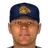
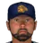

Franchise record book · ABL
Mexico City Golden Eagles
Seasons covered: 2002–2002. Only games played for this franchise count.
This club has no pre-2002 history in the export, so its record book is the 2002 season to date. Rate records need 3.1 PA or 1 inning per team game.
Home runs
| # | Player | Season | Team | Home runs |
|---|---|---|---|---|
| #1 | 2002 (ABL) |  Mexico City Golden Eagles Mexico City Golden Eagles | 10 | |
| #2 | 2002 (ABL) | Mexico City Golden Eagles | 9 | |
| #3 | 2002 (ABL) | Mexico City Golden Eagles | 7 | |
| #4 | 2002 (ABL) | Mexico City Golden Eagles | 6 | |
| #5 | 2002 (ABL) | Mexico City Golden Eagles | 5 | |
| #6 | 2002 (ABL) | Mexico City Golden Eagles | 4 | |
| #7 | 2002 (ABL) | Mexico City Golden Eagles | 2 | |
| #8 | 2002 (ABL) | Mexico City Golden Eagles | 2 | |
| #9 | 2002 (ABL) | Mexico City Golden Eagles | 1 | |
| #10 | 2002 (ABL) | Mexico City Golden Eagles | 1 |
Hits
| # | Player | Season | Team | Hits |
|---|---|---|---|---|
| #1 | 2002 (ABL) | Mexico City Golden Eagles | 54 | |
| #2 | 2002 (ABL) | Mexico City Golden Eagles | 49 | |
| #3 | 2002 (ABL) | Mexico City Golden Eagles | 47 | |
| #4 | 2002 (ABL) | Mexico City Golden Eagles | 45 | |
| #5 | 2002 (ABL) | Mexico City Golden Eagles | 45 | |
| #6 | 2002 (ABL) | Mexico City Golden Eagles | 44 | |
| #7 | 2002 (ABL) | Mexico City Golden Eagles | 36 | |
| #8 | 2002 (ABL) | Mexico City Golden Eagles | 32 | |
| #9 | 2002 (ABL) | Mexico City Golden Eagles | 28 | |
| #10 | 2002 (ABL) | Mexico City Golden Eagles | 11 |
RBI
| # | Player | Season | Team | RBI |
|---|---|---|---|---|
| #1 | 2002 (ABL) | Mexico City Golden Eagles | 29 | |
| #2 | 2002 (ABL) | Mexico City Golden Eagles | 29 | |
| #3 | 2002 (ABL) | Mexico City Golden Eagles | 26 | |
| #4 | 2002 (ABL) | Mexico City Golden Eagles | 25 | |
| #5 | 2002 (ABL) | Mexico City Golden Eagles | 24 | |
| #6 | 2002 (ABL) | Mexico City Golden Eagles | 16 | |
| #7 | 2002 (ABL) | Mexico City Golden Eagles | 16 | |
| #8 | 2002 (ABL) | Mexico City Golden Eagles | 14 | |
| #9 | 2002 (ABL) | Mexico City Golden Eagles | 9 | |
| #10 | 2002 (ABL) | Mexico City Golden Eagles | 4 |
Runs
| # | Player | Season | Team | Runs |
|---|---|---|---|---|
| #1 | 2002 (ABL) | Mexico City Golden Eagles | 28 | |
| #2 | 2002 (ABL) | Mexico City Golden Eagles | 27 | |
| #3 | 2002 (ABL) | Mexico City Golden Eagles | 25 | |
| #4 | 2002 (ABL) | Mexico City Golden Eagles | 23 | |
| #5 | 2002 (ABL) | Mexico City Golden Eagles | 23 | |
| #6 | 2002 (ABL) | Mexico City Golden Eagles | 18 | |
| #7 | 2002 (ABL) | Mexico City Golden Eagles | 17 | |
| #8 | 2002 (ABL) | Mexico City Golden Eagles | 16 | |
| #9 | 2002 (ABL) | Mexico City Golden Eagles | 10 | |
| #10 | 2002 (ABL) | Mexico City Golden Eagles | 5 |
Stolen bases
| # | Player | Season | Team | Stolen bases |
|---|---|---|---|---|
| #1 | 2002 (ABL) | Mexico City Golden Eagles | 12 | |
| #2 | 2002 (ABL) | Mexico City Golden Eagles | 8 | |
| #3 | 2002 (ABL) | Mexico City Golden Eagles | 4 | |
| #4 | 2002 (ABL) | Mexico City Golden Eagles | 4 | |
| #5 | 2002 (ABL) | Mexico City Golden Eagles | 3 | |
| #6 | 2002 (ABL) | Mexico City Golden Eagles | 2 | |
| #7 | 2002 (ABL) | Mexico City Golden Eagles | 2 | |
| #8 | 2002 (ABL) | Mexico City Golden Eagles | 1 | |
| #9 | 2002 (ABL) | Mexico City Golden Eagles | 1 | |
| #10 | 2002 (ABL) | Mexico City Golden Eagles | 1 |
Doubles
| # | Player | Season | Team | Doubles |
|---|---|---|---|---|
| #1 | 2002 (ABL) | Mexico City Golden Eagles | 11 | |
| #2 | 2002 (ABL) | Mexico City Golden Eagles | 10 | |
| #3 | 2002 (ABL) | Mexico City Golden Eagles | 8 | |
| #4 | 2002 (ABL) | Mexico City Golden Eagles | 8 | |
| #5 | 2002 (ABL) | Mexico City Golden Eagles | 7 | |
| #6 | 2002 (ABL) | Mexico City Golden Eagles | 7 | |
| #7 | 2002 (ABL) | Mexico City Golden Eagles | 6 | |
| #8 | 2002 (ABL) | Mexico City Golden Eagles | 6 | |
| #9 | 2002 (ABL) | Mexico City Golden Eagles | 4 | |
| #10 | 2002 (ABL) | Mexico City Golden Eagles | 2 |
Triples
| # | Player | Season | Team | Triples |
|---|---|---|---|---|
| #1 | 2002 (ABL) | Mexico City Golden Eagles | 3 | |
| #2 | 2002 (ABL) | Mexico City Golden Eagles | 2 | |
| #3 | 2002 (ABL) | Mexico City Golden Eagles | 2 | |
| #4 | 2002 (ABL) | Mexico City Golden Eagles | 1 | |
| #5 | 2002 (ABL) | Mexico City Golden Eagles | 0 | |
| #6 | 2002 (ABL) | Mexico City Golden Eagles | 0 | |
| #7 | 2002 (ABL) | Mexico City Golden Eagles | 0 | |
| #8 | 2002 (ABL) | Mexico City Golden Eagles | 0 | |
| #9 | 2002 (ABL) | Mexico City Golden Eagles | 0 | |
| #10 | 2002 (ABL) | Mexico City Golden Eagles | 0 |
Walks
| # | Player | Season | Team | Walks |
|---|---|---|---|---|
| #1 | 2002 (ABL) | Mexico City Golden Eagles | 32 | |
| #2 | 2002 (ABL) | Mexico City Golden Eagles | 25 | |
| #3 | 2002 (ABL) | Mexico City Golden Eagles | 17 | |
| #4 | 2002 (ABL) | Mexico City Golden Eagles | 12 | |
| #5 | 2002 (ABL) | Mexico City Golden Eagles | 12 | |
| #6 | 2002 (ABL) | Mexico City Golden Eagles | 11 | |
| #7 | 2002 (ABL) | Mexico City Golden Eagles | 11 | |
| #8 | 2002 (ABL) | Mexico City Golden Eagles | 7 | |
| #9 | 2002 (ABL) | Mexico City Golden Eagles | 7 | |
| #10 | 2002 (ABL) | Mexico City Golden Eagles | 4 |
Total bases
| # | Player | Season | Team | Total bases |
|---|---|---|---|---|
| #1 | 2002 (ABL) | Mexico City Golden Eagles | 92 | |
| #2 | 2002 (ABL) | Mexico City Golden Eagles | 80 | |
| #3 | 2002 (ABL) | Mexico City Golden Eagles | 78 | |
| #4 | 2002 (ABL) | Mexico City Golden Eagles | 76 | |
| #5 | 2002 (ABL) | Mexico City Golden Eagles | 67 | |
| #6 | 2002 (ABL) | Mexico City Golden Eagles | 62 | |
| #7 | 2002 (ABL) | Mexico City Golden Eagles | 58 | |
| #8 | 2002 (ABL) | Mexico City Golden Eagles | 44 | |
| #9 | 2002 (ABL) | Mexico City Golden Eagles | 44 | |
| #10 | 2002 (ABL) | Mexico City Golden Eagles | 15 |
Batting average qualified
| # | Player | Season | Team | Batting average |
|---|---|---|---|---|
| #1 | 2002 (ABL) | Mexico City Golden Eagles | .353 | |
| #2 | 2002 (ABL) | Mexico City Golden Eagles | .351 | |
| #3 | 2002 (ABL) | Mexico City Golden Eagles | .345 | |
| #4 | 2002 (ABL) | Mexico City Golden Eagles | .317 | |
| #5 | 2002 (ABL) | Mexico City Golden Eagles | .294 | |
| #6 | 2002 (ABL) | Mexico City Golden Eagles | .278 | |
| #7 | 2002 (ABL) | Mexico City Golden Eagles | .264 | |
| #8 | 2002 (ABL) | Mexico City Golden Eagles | .245 |
On-base % qualified
| # | Player | Season | Team | On-base % |
|---|---|---|---|---|
| #1 | 2002 (ABL) | Mexico City Golden Eagles | .463 | |
| #2 | 2002 (ABL) | Mexico City Golden Eagles | .421 | |
| #3 | 2002 (ABL) | Mexico City Golden Eagles | .403 | |
| #4 | 2002 (ABL) | Mexico City Golden Eagles | .358 | |
| #5 | 2002 (ABL) | Mexico City Golden Eagles | .349 | |
| #6 | 2002 (ABL) | Mexico City Golden Eagles | .331 | |
| #7 | 2002 (ABL) | Mexico City Golden Eagles | .326 | |
| #8 | 2002 (ABL) | Mexico City Golden Eagles | .323 |
Slugging % qualified
| # | Player | Season | Team | Slugging % |
|---|---|---|---|---|
| #1 | 2002 (ABL) | Mexico City Golden Eagles | .648 | |
| #2 | 2002 (ABL) | Mexico City Golden Eagles | .597 | |
| #3 | 2002 (ABL) | Mexico City Golden Eagles | .547 | |
| #4 | 2002 (ABL) | Mexico City Golden Eagles | .510 | |
| #5 | 2002 (ABL) | Mexico City Golden Eagles | .422 | |
| #6 | 2002 (ABL) | Mexico City Golden Eagles | .414 | |
| #7 | 2002 (ABL) | Mexico City Golden Eagles | .379 | |
| #8 | 2002 (ABL) | Mexico City Golden Eagles | .364 |
OPS qualified
| # | Player | Season | Team | OPS |
|---|---|---|---|---|
| #1 | 2002 (ABL) | Mexico City Golden Eagles | 1.111 | |
| #2 | 2002 (ABL) | Mexico City Golden Eagles | 1.000 | |
| #3 | 2002 (ABL) | Mexico City Golden Eagles | .931 | |
| #4 | 2002 (ABL) | Mexico City Golden Eagles | .896 | |
| #5 | 2002 (ABL) | Mexico City Golden Eagles | .780 | |
| #6 | 2002 (ABL) | Mexico City Golden Eagles | .745 | |
| #7 | 2002 (ABL) | Mexico City Golden Eagles | .702 | |
| #8 | 2002 (ABL) | Mexico City Golden Eagles | .689 |
WAR (OOTP)
| # | Player | Season | Team | WAR (OOTP) |
|---|---|---|---|---|
| #1 | 2002 (ABL) | Mexico City Golden Eagles | 1.7 | |
| #2 | 2002 (ABL) | Mexico City Golden Eagles | 1.4 | |
| #3 | 2002 (ABL) | Mexico City Golden Eagles | 0.6 | |
| #4 | 2002 (ABL) | Mexico City Golden Eagles | 0.2 | |
| #5 | 2002 (ABL) | Mexico City Golden Eagles | 0.0 | |
| #6 | 2002 (ABL) | Mexico City Golden Eagles | 0.0 | |
| #7 | 2002 (ABL) | Mexico City Golden Eagles | 0.0 | |
| #8 | 2002 (ABL) | Mexico City Golden Eagles | -0.1 | |
| #9 | 2002 (ABL) | Mexico City Golden Eagles | -0.1 | |
| #10 | 2002 (ABL) | Mexico City Golden Eagles | -0.2 |
Wins
| # | Player | Season | Team | Wins |
|---|---|---|---|---|
| #1 | 2002 (ABL) | Mexico City Golden Eagles | 3 | |
| #2 | 2002 (ABL) | Mexico City Golden Eagles | 3 | |
| #3 |  Jesus Rios • | 2002 (ABL) | Mexico City Golden Eagles | 3 |
| #4 | 2002 (ABL) | Mexico City Golden Eagles | 3 | |
| #5 | 2002 (ABL) | Mexico City Golden Eagles | 2 | |
| #6 | 2002 (ABL) | Mexico City Golden Eagles | 1 | |
| #7 | 2002 (ABL) | Mexico City Golden Eagles | 1 | |
| #8 | 2002 (ABL) | Mexico City Golden Eagles | 1 | |
| #9 |  Armando Valdez • | 2002 (ABL) | Mexico City Golden Eagles | 1 |
| #10 | 2002 (ABL) | Mexico City Golden Eagles | 0 |
Strikeouts
| # | Player | Season | Team | Strikeouts |
|---|---|---|---|---|
| #1 | 2002 (ABL) | Mexico City Golden Eagles | 36 | |
| #2 | 2002 (ABL) | Mexico City Golden Eagles | 28 | |
| #3 | 2002 (ABL) | Mexico City Golden Eagles | 22 | |
| #4 | 2002 (ABL) | Mexico City Golden Eagles | 22 | |
| #5 | 2002 (ABL) | Mexico City Golden Eagles | 22 | |
| #6 | 2002 (ABL) | Mexico City Golden Eagles | 17 | |
| #7 | 2002 (ABL) | Mexico City Golden Eagles | 15 | |
| #8 | 2002 (ABL) | Mexico City Golden Eagles | 15 | |
| #9 | 2002 (ABL) | Mexico City Golden Eagles | 14 | |
| #10 | 2002 (ABL) | Mexico City Golden Eagles | 14 |
Saves
| # | Player | Season | Team | Saves |
|---|---|---|---|---|
| #1 | 2002 (ABL) | Mexico City Golden Eagles | 10 | |
| #2 | 2002 (ABL) | Mexico City Golden Eagles | 2 | |
| #3 | 2002 (ABL) | Mexico City Golden Eagles | 2 | |
| #4 | 2002 (ABL) | Mexico City Golden Eagles | 1 | |
| #5 | 2002 (ABL) | Mexico City Golden Eagles | 0 | |
| #6 | 2002 (ABL) | Mexico City Golden Eagles | 0 | |
| #7 | 2002 (ABL) | Mexico City Golden Eagles | 0 | |
| #8 | 2002 (ABL) | Mexico City Golden Eagles | 0 | |
| #9 | 2002 (ABL) | Mexico City Golden Eagles | 0 | |
| #10 | 2002 (ABL) | Mexico City Golden Eagles | 0 |
Innings
| # | Player | Season | Team | Innings |
|---|---|---|---|---|
| #1 | 2002 (ABL) | Mexico City Golden Eagles | 54.2 | |
| #2 | 2002 (ABL) | Mexico City Golden Eagles | 43.2 | |
| #3 | 2002 (ABL) | Mexico City Golden Eagles | 37.2 | |
| #4 | 2002 (ABL) | Mexico City Golden Eagles | 35.0 | |
| #5 | 2002 (ABL) | Mexico City Golden Eagles | 34.0 | |
| #6 | 2002 (ABL) | Mexico City Golden Eagles | 23.2 | |
| #7 | 2002 (ABL) | Mexico City Golden Eagles | 23.1 | |
| #8 | Jesus Rios • | 2002 (ABL) | Mexico City Golden Eagles | 22.1 |
| #9 | 2002 (ABL) | Mexico City Golden Eagles | 18.0 | |
| #10 | 2002 (ABL) | Mexico City Golden Eagles | 16.0 |
Complete games
| # | Player | Season | Team | Complete games |
|---|---|---|---|---|
| #1 | 2002 (ABL) | Mexico City Golden Eagles | 1 | |
| #2 | 2002 (ABL) | Mexico City Golden Eagles | 0 | |
| #3 | 2002 (ABL) | Mexico City Golden Eagles | 0 | |
| #4 | 2002 (ABL) | Mexico City Golden Eagles | 0 | |
| #5 | 2002 (ABL) | Mexico City Golden Eagles | 0 | |
| #6 | 2002 (ABL) | Mexico City Golden Eagles | 0 | |
| #7 | 2002 (ABL) | Mexico City Golden Eagles | 0 | |
| #8 | 2002 (ABL) | Mexico City Golden Eagles | 0 | |
| #9 | 2002 (ABL) | Mexico City Golden Eagles | 0 | |
| #10 | 2002 (ABL) | Mexico City Golden Eagles | 0 |
Shutouts
| # | Player | Season | Team | Shutouts |
|---|---|---|---|---|
| #1 | 2002 (ABL) | Mexico City Golden Eagles | 0 | |
| #2 | 2002 (ABL) | Mexico City Golden Eagles | 0 | |
| #3 | 2002 (ABL) | Mexico City Golden Eagles | 0 | |
| #4 | 2002 (ABL) | Mexico City Golden Eagles | 0 | |
| #5 | 2002 (ABL) | Mexico City Golden Eagles | 0 | |
| #6 | 2002 (ABL) | Mexico City Golden Eagles | 0 | |
| #7 | 2002 (ABL) | Mexico City Golden Eagles | 0 | |
| #8 | 2002 (ABL) | Mexico City Golden Eagles | 0 | |
| #9 | 2002 (ABL) | Mexico City Golden Eagles | 0 | |
| #10 | 2002 (ABL) | Mexico City Golden Eagles | 0 |
ERA qualified
| # | Player | Season | Team | ERA |
|---|---|---|---|---|
| #1 | 2002 (ABL) | Mexico City Golden Eagles | 4.12 | |
| #2 | 2002 (ABL) | Mexico City Golden Eagles | 5.56 |
WHIP qualified
| # | Player | Season | Team | WHIP |
|---|---|---|---|---|
| #1 | 2002 (ABL) | Mexico City Golden Eagles | 1.41 | |
| #2 | 2002 (ABL) | Mexico City Golden Eagles | 1.67 |
K/9 qualified
| # | Player | Season | Team | K/9 |
|---|---|---|---|---|
| #1 | 2002 (ABL) | Mexico City Golden Eagles | 5.9 | |
| #2 | 2002 (ABL) | Mexico City Golden Eagles | 3.1 |
WAR (OOTP)
| # | Player | Season | Team | WAR (OOTP) |
|---|---|---|---|---|
| #1 | 2002 (ABL) | Mexico City Golden Eagles | 1.4 | |
| #2 | 2002 (ABL) | Mexico City Golden Eagles | 1.3 | |
| #3 | 2002 (ABL) | Mexico City Golden Eagles | 0.8 | |
| #4 | 2002 (ABL) | Mexico City Golden Eagles | 0.5 | |
| #5 | Armando Valdez • | 2002 (ABL) | Mexico City Golden Eagles | 0.3 |
| #6 | Jesus Rios • | 2002 (ABL) | Mexico City Golden Eagles | 0.2 |
| #7 | 2002 (ABL) | Mexico City Golden Eagles | 0.2 | |
| #8 | 2002 (ABL) | Mexico City Golden Eagles | 0.1 | |
| #9 | 2002 (ABL) | Mexico City Golden Eagles | 0.1 | |
| #10 | 2002 (ABL) | Mexico City Golden Eagles | 0.0 |
Home runs
| # | Player | Years | Home runs |
|---|---|---|---|
| #1 | 1991–02 | 10 | |
| #2 | 2002–02 | 9 | |
| #3 | 1996–02 | 7 | |
| #4 | 2001–02 | 6 | |
| #5 | 1997–02 | 5 | |
| #6 | 1996–02 | 4 | |
| #7 | 1995–02 | 2 | |
| #8 | 2002–02 | 2 | |
| #9 | 1996–02 | 1 | |
| #10 | 2002–02 | 1 |
Hits
| # | Player | Years | Hits |
|---|---|---|---|
| #1 | 1996–02 | 54 | |
| #2 | 1991–02 | 49 | |
| #3 | 2002–02 | 47 | |
| #4 | 1997–02 | 45 | |
| #5 | 1996–02 | 45 | |
| #6 | 1996–02 | 44 | |
| #7 | 2001–02 | 36 | |
| #8 | 2002–02 | 32 | |
| #9 | 1995–02 | 28 | |
| #10 | 2002–02 | 11 |
RBI
| # | Player | Years | RBI |
|---|---|---|---|
| #1 | 1996–02 | 29 | |
| #2 | 1991–02 | 29 | |
| #3 | 1996–02 | 26 | |
| #4 | 2002–02 | 25 | |
| #5 | 2001–02 | 24 | |
| #6 | 1997–02 | 16 | |
| #7 | 1995–02 | 16 | |
| #8 | 2002–02 | 14 | |
| #9 | 1996–02 | 9 | |
| #10 | 2002–02 | 4 |
Runs
| # | Player | Years | Runs |
|---|---|---|---|
| #1 | 1996–02 | 28 | |
| #2 | 1997–02 | 27 | |
| #3 | 1991–02 | 25 | |
| #4 | 2001–02 | 23 | |
| #5 | 2002–02 | 23 | |
| #6 | 1996–02 | 18 | |
| #7 | 1996–02 | 17 | |
| #8 | 2002–02 | 16 | |
| #9 | 1995–02 | 10 | |
| #10 | 2002–02 | 5 |
Stolen bases
| # | Player | Years | Stolen bases |
|---|---|---|---|
| #1 | 1996–02 | 12 | |
| #2 | 1997–02 | 8 | |
| #3 | 1995–02 | 4 | |
| #4 | 2002–02 | 4 | |
| #5 | 2001–02 | 3 | |
| #6 | 1996–02 | 2 | |
| #7 | 2002–02 | 2 | |
| #8 | 1996–02 | 1 | |
| #9 | 2002–02 | 1 | |
| #10 | 2002–02 | 1 |
Doubles
| # | Player | Years | Doubles |
|---|---|---|---|
| #1 | 1991–02 | 11 | |
| #2 | 1996–02 | 10 | |
| #3 | 2001–02 | 8 | |
| #4 | 1996–02 | 8 | |
| #5 | 1997–02 | 7 | |
| #6 | 1996–02 | 7 | |
| #7 | 2002–02 | 6 | |
| #8 | 2002–02 | 6 | |
| #9 | 1995–02 | 4 | |
| #10 | 2002–02 | 2 |
Triples
| # | Player | Years | Triples |
|---|---|---|---|
| #1 | 1995–02 | 3 | |
| #2 | 1996–02 | 2 | |
| #3 | 1996–02 | 2 | |
| #4 | 1991–02 | 1 | |
| #5 | 1992–02 | 0 | |
| #6 | 1997–02 | 0 | |
| #7 | 2001–02 | 0 | |
| #8 | 1996–02 | 0 | |
| #9 | 2002–02 | 0 | |
| #10 | 2002–02 | 0 |
Walks
| # | Player | Years | Walks |
|---|---|---|---|
| #1 | 1991–02 | 32 | |
| #2 | 2001–02 | 25 | |
| #3 | 1996–02 | 17 | |
| #4 | 1997–02 | 12 | |
| #5 | 2002–02 | 12 | |
| #6 | 1995–02 | 11 | |
| #7 | 2002–02 | 11 | |
| #8 | 1996–02 | 7 | |
| #9 | 1996–02 | 7 | |
| #10 | 1992–02 | 4 |
Total bases
| # | Player | Years | Total bases |
|---|---|---|---|
| #1 | 1991–02 | 92 | |
| #2 | 2002–02 | 80 | |
| #3 | 1996–02 | 78 | |
| #4 | 1996–02 | 76 | |
| #5 | 1997–02 | 67 | |
| #6 | 2001–02 | 62 | |
| #7 | 1996–02 | 58 | |
| #8 | 1995–02 | 44 | |
| #9 | 2002–02 | 44 | |
| #10 | 2002–02 | 15 |
Batting average min 2,000 PA
| # | Player | Years | Batting average |
|---|
On-base % min 2,000 PA
| # | Player | Years | On-base % |
|---|
Slugging % min 2,000 PA
| # | Player | Years | Slugging % |
|---|
OPS min 2,000 PA
| # | Player | Years | OPS |
|---|
WAR (OOTP)
| # | Player | Years | WAR (OOTP) |
|---|---|---|---|
| #1 | 1996–02 | 1.7 | |
| #2 | 1991–02 | 1.4 | |
| #3 | 2002–02 | 0.6 | |
| #4 | 1996–02 | 0.2 | |
| #5 | 1992–02 | 0.0 | |
| #6 | 2002–02 | 0.0 | |
| #7 | 2002–02 | 0.0 | |
| #8 | 2002–02 | -0.1 | |
| #9 | 2002–02 | -0.1 | |
| #10 | 1996–02 | -0.2 |
Wins
| # | Player | Years | Wins |
|---|---|---|---|
| #1 | 2001–02 | 3 | |
| #2 | 1994–02 | 3 | |
| #3 | Jesus Rios • | 2002–02 | 3 |
| #4 | 2002–02 | 3 | |
| #5 | 2001–02 | 2 | |
| #6 | 1988–02 | 1 | |
| #7 | 2002–02 | 1 | |
| #8 | 2002–02 | 1 | |
| #9 | Armando Valdez • | 2002–02 | 1 |
| #10 | 2001–02 | 0 |
Strikeouts
| # | Player | Years | Strikeouts |
|---|---|---|---|
| #1 | 1994–02 | 36 | |
| #2 | 1988–02 | 28 | |
| #3 | 2001–02 | 22 | |
| #4 | 2001–02 | 22 | |
| #5 | 2002–02 | 22 | |
| #6 | 2002–02 | 17 | |
| #7 | 2001–02 | 15 | |
| #8 | 2001–02 | 15 | |
| #9 | 1997–02 | 14 | |
| #10 | 1997–02 | 14 |
Saves
| # | Player | Years | Saves |
|---|---|---|---|
| #1 | 1997–02 | 10 | |
| #2 | 2001–02 | 2 | |
| #3 | 2001–02 | 2 | |
| #4 | 2002–02 | 1 | |
| #5 | 2001–02 | 0 | |
| #6 | 2001–02 | 0 | |
| #7 | 2001–02 | 0 | |
| #8 | 1994–02 | 0 | |
| #9 | 1997–02 | 0 | |
| #10 | 1988–02 | 0 |
Innings
| # | Player | Years | Innings |
|---|---|---|---|
| #1 | 1994–02 | 54.2 | |
| #2 | 2001–02 | 43.2 | |
| #3 | 2002–02 | 37.2 | |
| #4 | 2001–02 | 35.0 | |
| #5 | 1988–02 | 34.0 | |
| #6 | 2002–02 | 23.2 | |
| #7 | 2001–02 | 23.1 | |
| #8 | Jesus Rios • | 2002–02 | 22.1 |
| #9 | 2001–02 | 18.0 | |
| #10 | 1997–02 | 16.0 |
Complete games
| # | Player | Years | Complete games |
|---|---|---|---|
| #1 | 2001–02 | 1 | |
| #2 | 2001–02 | 0 | |
| #3 | 1997–02 | 0 | |
| #4 | 2001–02 | 0 | |
| #5 | 2001–02 | 0 | |
| #6 | 1994–02 | 0 | |
| #7 | 1997–02 | 0 | |
| #8 | 2001–02 | 0 | |
| #9 | 1988–02 | 0 | |
| #10 | 2002–02 | 0 |
Shutouts
| # | Player | Years | Shutouts |
|---|---|---|---|
| #1 | 2001–02 | 0 | |
| #2 | 1997–02 | 0 | |
| #3 | 2001–02 | 0 | |
| #4 | 2001–02 | 0 | |
| #5 | 2001–02 | 0 | |
| #6 | 1994–02 | 0 | |
| #7 | 1997–02 | 0 | |
| #8 | 2001–02 | 0 | |
| #9 | 1988–02 | 0 | |
| #10 | 2002–02 | 0 |
ERA min 500 IP
| # | Player | Years | ERA |
|---|
WHIP min 500 IP
| # | Player | Years | WHIP |
|---|
K/9 min 500 IP
| # | Player | Years | K/9 |
|---|
WAR (OOTP)
| # | Player | Years | WAR (OOTP) |
|---|---|---|---|
| #1 | 1994–02 | 1.4 | |
| #2 | 1988–02 | 1.3 | |
| #3 | 2002–02 | 0.8 | |
| #4 | 2001–02 | 0.5 | |
| #5 | Armando Valdez • | 2002–02 | 0.3 |
| #6 | Jesus Rios • | 2002–02 | 0.2 |
| #7 | 2001–02 | 0.2 | |
| #8 | 1997–02 | 0.1 | |
| #9 | 2001–02 | 0.1 | |
| #10 | 2001–02 | 0.0 |
League-wide record book · Mexico City Golden Eagles team page